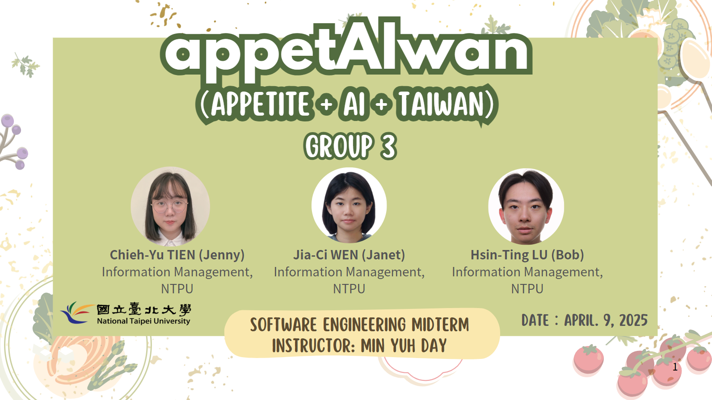

APPETITE + AI + TAIWAN = Personalized Meal Suggestions for You
📌 Product Background
It's hard to understand nutrition info when eating out. Most recipe platforms lack personalized health-based suggestions. appetAIwan integrates AI technology with a LINE bot to recommend meals based on your health profile.

👤 User Stories
Mary (Age 55, Hypertension)
She wants to manage her condition through food instead of medication. After selecting "Hypertension," the system filters and recommends simple, easy-to-follow recipes.
Ben (Age 30, Office Worker)
Looking for quick, weight-loss-friendly recipes. After work, he uses the LINE Bot to enter his goals and receives tailored recipe recommendations with nutritional info.
📊 STP & 4P Analysis
Positioning: LINE users aiming for weight or blood pressure control, who cook at home regularly or occasionally. Price: Basic features are free; premium features use a feature-unlock model. Promotion: Social media campaigns, KOL & nutritionist collaborations, QR codes at clinics/gyms/markets. Place: Primarily via LINE Bot; website access under development.
🔍 Business Model & SWOT
Strengths: Uses LLM + RAG for intelligent recommendations; no app installation needed. Weaknesses: Users may not fully trust AI recommendations. Opportunities: Growing health-focused food market; potential for cross-industry partnerships. Threats: Easy to replicate; existing large health platforms present competition.